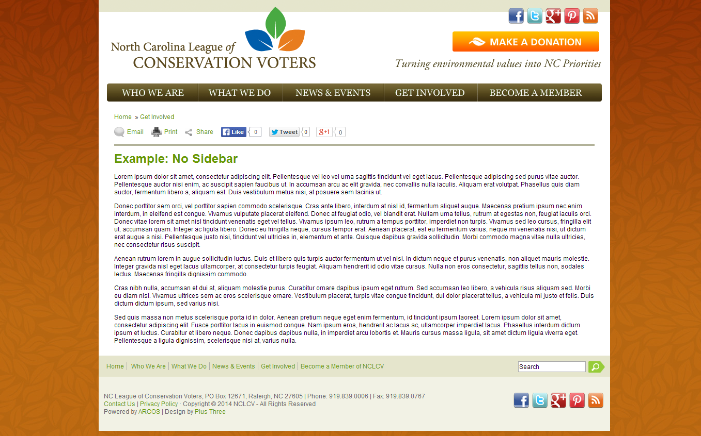

Online Scorecard Maps
Margie Roswell
/ ScorecardMaps.com / mroswell@gmail.com
Jen Brock-Cancellieri / MDLCV.org / jbrock@mdlcv.org

About this Talk...
- Look at various scorecard maps and data visualizations
- Your role
- A list of technology breakthroughs
- Accessibility bloopers
- Questions after all panelists have presented

NCLCV: The original PDF Map
Food Policy Scorecard (under development)

CommitteeMaps.org
2006 LCV Endorsement Map
(still works on archive.org!)
Your Role
Publish a Google Spreadsheet
(or share an Excel file)
Legislator Dots or Boundaries?

Choose a color scheme


An example using the "multivariate" stripes
Website Width (1 of 2)
Website Width (2 of 2)
Maryland LCV Scorecard Map Tweets
North Carolina LCV Scorecard Map Twitter Links
Your Role (Review)
- Publish a Google Spreadsheet (or share an Excel file)
- Legislator Dots? or Boundaries?
- Choose colors, and decide on legend "breaks"
- Optional: Increase website width
- Optional: Default tweets for each legislator?
If so, add them to the spreadsheet.
Key Technology Breakthroughs
- Replicate the look and feel of a Geographic Information System in JavaScript. Boundaries, points, thematic colors, zoom, pan, and info boxes.
- Populate a map and web page using Google Sheets. NCLCV is the first.
- Consume the "Congress API" on CommitteeMaps.org 2015: Add state legislative committees, via the "Open States API"
- Color a text chart by LCV score.
Not yet implemented on a live site.
Accessibility Bloopers
- Can you find the content easily?
- How many clicks does it take?
- Is it readable?
- Is it legible?
- Is it disability-accessible?
Readability Score
2013 MDLCV Scorecard
Press Release
Press Release
Ronald Reagan's
Inaugural Address
http://readability-score.com
Inaugural Address
PDFs


Red-Green Color Blindness
Resources
- http://ScorecardMaps.com
- http://readability-score.com
- http://www.nngroupz.com/articles/pdf-unfit-for-human-consumption/
- http://www.paciellogroup.com/resources/contrastAnalyser
- http://aspnetresources.com/tools/colorBlindness
- http://pa11y.org/
- http://www.cynthiasays.com/
- http://wave.webaim.org/
Online Scorecard Maps
Margie Roswell
/ ScorecardMaps.com / mroswell@gmail.com
Jen Brock-Cancellieri / MDLCV.org / jbrock@mdlcv.org